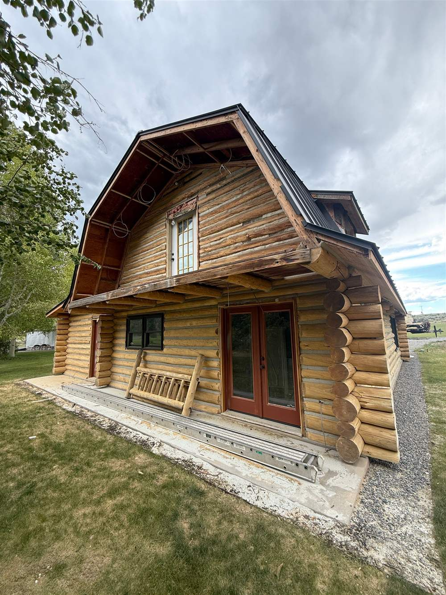

Some of the most extraordinary log homes in this valley are the ones that have been here for decades. They deserve more than a patch — they deserve the same care they were first built with.
Chase Construction provides log cabin restoration services across Sun Valley, Ketchum, and Hailey. Whether your cabin needs targeted structural repair or a comprehensive overhaul from the ground up, we bring the same expertise to existing homes that we bring to new builds.
Log home maintenance and structural restoration are different things. We do both — and we'll tell you honestly which one your property actually needs.
The process begins with an honest assessment. We walk the property, document what we see, and tell you what it will take to bring the home to where it should be. No inflated scopes. No surprises discovered mid-project.
Before any work is proposed, we evaluate the structure — what's performing, what's failing, and what's at risk. We provide a clear picture of what needs to happen and why.
Working within an existing structure requires the ability to match original log profiles, replicate historic joinery, and respect what was built before while fixing what failed. We know the difference between what's cosmetic and what's structural — and we don't confuse the two.
For cabins in good shape that need regular attention — chinking and staining, sealant application, structural monitoring — we offer ongoing log home maintenance services. Protecting your investment before problems develop is always less expensive than addressing them after.

Chase Construction has worked on log homes across Sun Valley for over two decades. Many of the finest restored cabins in Ketchum, Hailey, and Sun Valley have had our hands on them at some point. We know these structures. We know this climate. And we know what it takes to make a historic log home last another generation.
If you're looking for log cabin restoration near Sun Valley — or if you own a property that needs attention and aren't sure where to start — contact us. We'll give you a straight answer.
Maintenance handles surface-level issues: re-chinking, staining, sealant reapplication. Restoration addresses structural problems — log decay, settling, failed connections, moisture infiltration at the structural level. If you're unsure, we'll assess it and tell you which category you're actually in.
Yes. We document everything — photos, written notes, video walkthroughs — and present findings remotely. Many of our restoration clients are out-of-state owners who rely on us to be their eyes and ears on the property. That's a role we're comfortable in.
For structural work that requires permits, yes — we manage the permitting process as part of the project scope. We know the local requirements and handle it as part of what we do.
We walk the property, tell you what we see, and give you a clear picture of what's needed before any work begins.
Request an Assessment